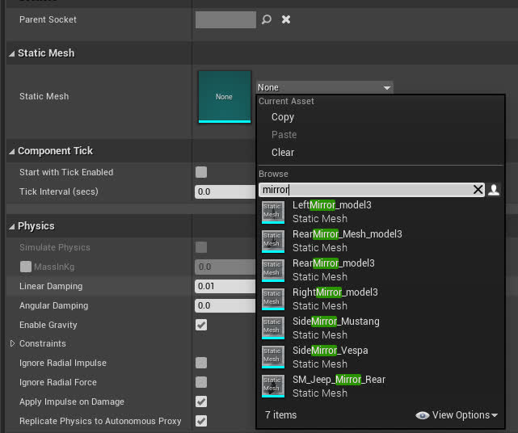
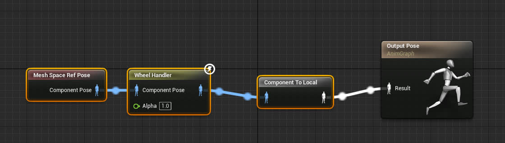
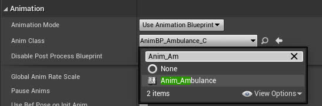

如何添加您自己的 EgoVehicle
本指南介绍如何从现有的 Carla 车辆添加您自己的自定义 EgoVehicle，然后您可以在 DReyeVR 中使用。展示将救护车添加为新的 DReyeVR EgoVehicle 所需的最少步骤。
先决条件
- 您应该已经安装 DReyeVR 并正常运行
- 如果您想修改新车辆的静态网格，您可能应该查看 Model.md：
- 例如，创建高多边形镜像网格
- 例如，拆下方向盘用作动态道具（随动画移动）
1. 选择要添加的车辆
- 由于 DReyeVR EgoVehicle 是
ACarlaWheeledVehicle的子实例，因此您应该使用 Carla 车辆作为所需车辆的基类。在本教程中，我们将使用救护车作为示例，但任何 Carla 车辆都可以。- 针对车辆
XYZ - 蓝图文件位于
Unreal/CarlaUE4/Content/Carla/Blueprints/Vehicles/XYZ/BP_XYZ.uasset - 静态网格文件位于
Unreal/CarlaUE4/Content/Carla/Static/Vehicles/XWheeled/XYZ/
- 针对车辆
- 一旦您决定了车辆，就通过复制（在虚幻编辑器中）蓝图文件来创建此结构。
- 对您想要添加的任何其他网格组件执行相同操作。
- 您需要让文件结构与现有的 EgoVehicles 相匹配：
CarlaUE4/Content/DReyeVR/ ├── EgoVehicle │ ├── Extra │ ├── Jeep │ ├── Mustang66 │ ├── Ambulance # <-- 你的新 EgoVehicle │ ├── TeslaM3 # <-- DReyeVR 中默认的车 │ └── Vespa ... - 在您的
XYZ/文件夹中，您需要复制新的 BP_XYZ 资源（从编辑器执行此操作以便可以更新缓存路径）并在此处创建您可能需要的任何其他文件夹（例如，Mesh、Mirrors、SteeringWheel、Tires是几个示例）。 -
最好在编辑器中执行这些资产文件修改。您可以通过单击并拖动将文件从内容浏览器复制到其他文件夹，以获取此弹出窗口：

注意
如果您想编辑车辆网格，这里就是您要进行的操作。您可能希望在 Static 目录中构建现有的静态网格。
2. 重新定义车辆蓝图
（为了本教程的目的，我们假设 XYZ=Ambulance）
-
打开刚从内容浏览器复制的
Content/DReyeVR/EgoVehicle/Ambulance/BP_Ambulance资源 -
选择
Class Defaults，然后在右上角（Class Options）中选择Parent Class，并搜索EgoVehicle进行重新父级设置（如下图所示）。这有效地将蓝图的基类从BaseVehiclePawn（Carla 默认）重新组织为EgoVehicle（DReyeVR C++ 类，仍然继承自 BaseVehiclePawn）。-
将会弹出有关数据丢失的警告，您应该继续（这纯粹是附加的）。
-
注意 如果蓝图损坏，您应该首先尝试重新回到
BaseVehiclePawn（原始父级），然后再回到 DReyeVREgoVehicle。 -

- 演示类设置按钮，用于编辑此BP的类实例
-

- 演示重新父级按钮，选择下拉菜单并搜索兼容的类以使用
BaseVehiclePawns（Carla）或EgoVehicle（DReyeVR）重新父级。
- 演示重新父级按钮，选择下拉菜单并搜索兼容的类以使用
-
-
现在，从技术上讲，这辆车是 DReyeVR EgoVehicle！
3. 添加新的配置文件和代码
现在，要使用 DReyeVR 实际注册这个新蓝图并使其可供生成，您需要在代码中添加两位：
- 将新车辆的名称（例如，我们继承的 BP_Ambulance 蓝图的
"Ambulance"）添加到DReyeVRFactory.h中的可用 EgoVehicles 列表中。// place the names of all your new custom EgoVehicle types here: /// IMPORTANT: make sure these match the ConfigFile AND Blueprint!! // We expect Config/EgoVehicle/XYZ.ini and Content/DReyeVR/EgoVehicles/XYZ/BP_XYZ.uasset const std::vector<std::string> VehicleTypes = { "TeslaM3", // Tesla Model 3 (Default) "Mustang66", // Mustang66 "Jeep", // JeepWranglerRubicon "Vespa" // Vespa (2WheeledVehicles) "Ambulance", // <-- the new vehicle! (for this tutorial) // add more here }; - 添加一个新的配置文件（到
Unreal/CarlaUE4/Config/EgoVehicles/），用于参数化此车辆。这允许 DReyeVR 知道将相机根位置（驾驶员座位）、镜子、方向盘等东西放在哪里，并且此ConfigFile可以扩展以支持许多运行时组合。- 您需要确保配置文件的名称与您的新 EgoVehicle 完全相同（这是它们的读取方式）。我们建议复制现有配置文件（默认为
TeslaM3.ini并重命名如下）：CarlaUE4/Config/ ├── ... ├── DReyeVRConfig.ini ├── ... ├── EgoVehicles/ │ ├── Jeep.ini │ ├── Mustang66.ini │ ├── Ambulance.ini # <-- your new file! │ ├── TeslaM3.ini │ └── Vespa.ini ├── ... ... - 然后，您可能需要编辑此文件的一些内容，以匹配可以从编辑器中获取的 EgoVehicle 规范。例如，下图显示我们要将 VRCameraRoot（头部位置）移动到 (
108, -40, 158)。
- 您可能还希望将仪表板元素移动到适合您喜好的位置。
- 重要 您还需要为蓝图（组件列表中的
BP_Ambulance）启用Start with Tick Enabled，因为默认情况下，它们对于 Carla 车辆是禁用的： -
您还应该注意到，SteeringWheel 和 Mirrors 等资产没有分配任何静态网格。您可以通过单击组件（在左侧层次结构上）并分配新的静态网格（在右侧详细信息窗格上）来访问它们。这会直接在蓝图文件中烘焙资产，因此只需执行一次即可。
示例：Mirrors 示例：Steering wheel  
- 现在，打开刚刚创建的 Ambulance.ini文件，并开始更新字段（主要是转换）以匹配您关心的参数。重要的是，对于[Blueprint]::Path条目，您可以通过右键单击内容查看器中的蓝图并选择Copy Reference来获取此路径。- 
- 请注意，变换的编码如下 # Format: Location XYZ in CM | Rotation Roll/Pitch/Yaw in Degrees | Scale XYZ percent (1=100%) ExampleTransform=(X=0.0, Y=0.0, Z=3.0 | R=-45, P=90.0, Y=0 | X=1, Y=1, Z=1)
- 您需要确保配置文件的名称与您的新 EgoVehicle 完全相同（这是它们的读取方式）。我们建议复制现有配置文件（默认为

4. 将新车辆设置为 DReyeVR 默认车辆
在 DReyeVRConfig.ini 通用配置文件（用于非车辆特定参数）中，您应该设置默认生成的车辆。这将采用车辆的名称，在本例中为救护车Ambulance。
[EgoVehicle]
VehicleType="Ambulance"
就这样！现在您应该能够重新启动 make launch 了，当您按下 Play 时，您将开始使用新的 EgoVehicle。
4. [可选] 创建新动画
有时，尤其是在修改 blender 中的网格并将其导出/导入回虚幻引擎时，原始动画资源可能会有些混乱，无法正常工作。如果轮胎（和方向盘，如果您添加了方向盘）在 EgoVehicle 移动时没有转动，您就会知道动画是否失败。
请参阅 此处 的 Carla 相应文档。
!!! 注意 截至测试，这仅适用于 4WheeledVehicles。2WheeledVehicles 更为复杂，本教程未涉及。
为 Carla/DReyeVR 创建新动画蓝图的步骤
1.在 Ambulance/Mesh 目录中创建一个新的动画蓝图（如果有的话，否则在 Ambulance 内创建一个新的文件夹 Mesh/）。
2.确保动画网格的父级设置为 VehicleAnimInstance，并且预览骨架设置为新车辆的骨架网格（例如 SK_Ambulance_Skeleton）
CreateAnimBP
{kind=link}
3.将新资产命名为 Anim_Ambulance 并打开它。打开右下角的 AnimationGraph，如下所示：

4.打开另一个附近的动画蓝图（例如 Content/DReyeVR/EgoVehicle/TeslaM3/Mesh/Animation_model3）并打开其 AnimationGraph 以复制连接到 Output Pose 的前三个蓝图节点，如下所示：

5.然后，返回 Anim_Ambulance，粘贴刚刚复制的三个节点并将它们连接到输出姿势(Output Pose)：

6.最后，返回车辆蓝图（BP_Ambulance）并在组件部分选择网格，然后在（右侧）详细信息面板中将动画类更改为新的 Anim_Ambulance，如下所示：
